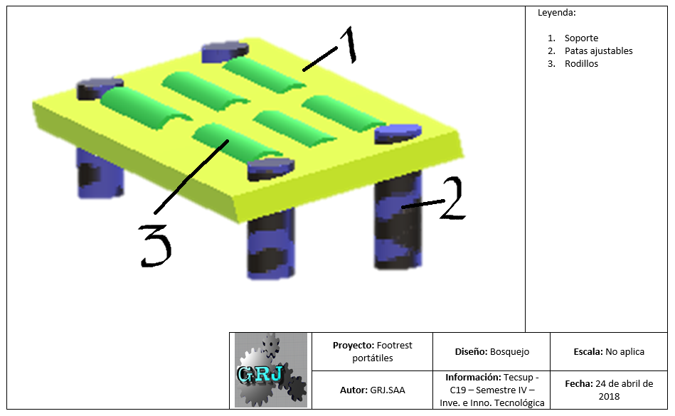

5. Idear
Aquí vamos a crear elementos tangibles artefactos, maquetas o storyboard o actividades simuladas como sketch que nos permitan a poner a prueba nuestras ideas, interactuar con ellas, debatir y acercarnos a la solución final.
Un prototipo nos permite fallar barato y fallar seguido hasta encontrar el camino que buscamos, además podemos desarrollar distintas ideas sin tener que comprometernos con ninguna.

BOSQUEJO DEL PRODUCTO.
PARTES: SOPORTE.
PARTES: RODILLOS.

PARTES: PATAS AJUSTABLES.
1. Bosquejo
Con la encuesta realizada a 60 personas se logró determinar que el problema radica primordialmente en el uso de sillas inadecuadas y es la causa de que se genere en los estudiantes una mala postura, además se estableció que el mejoramiento de las sillas sería muy complicado en cuanto a costos, por ello se está optando acondicionar las sillas con sistema novedoso y práctico para mejorar la ergonomía de los estudiantes además de lograr el favorecimiento de una correcta posición del cuerpo, ayudando a reducir la tensión y la fatiga de las piernas, la espalda y el cuello además cuenta con balanceo para favorecer la circulación sanguínea Ello le ayudará a que pueda reducir todas aquellas patologías o problemas derivados de la tensión que se acumulan en sus piernas.
Hacer click para descargar el archivo (Word).
2. Desarrollan la descomposición funcional de las partes describiendolas de forma meticulosa y detallada.
Basicamente hemos encontrado en el diseño de la maqueta tres partes principales las cuales son soporte, rodillos y patas. Un modelo de función o modelo funcional en ingeniería de sistemas e ingeniería de software es una representación de las funciones (las actividades, procesos, operaciones) en el sistema o modelo área 1 Un modelo de función similar con el modelo de actividad o modelo de proceso, es una representación gráfica de una empresa dentro de un ámbito definido. Los propósitos del modelo de función son describir las funciones y los procesos, ayudar con el descubrimiento de la necesidad de información, ayudar identificar las oportunidades, y establecer una base para determinar el producto y atender el servicio de gastos.
Hacer click para descargar el soporte (Word). Hacer click para descargar los rodillos (Word). Hacer click para descargar las patas ajustables (Word).3. Maqueta
Se desarrollo una maqueta de acuerdo al diseño. ¿Ahora cómo se hace un prototipo? Empieza construyendo aun cuando no sepas que estás haciendo el solo acto de buscar materiales será suficiente para empezar, no le dediques mucho tiempo a un mismo prototipo déjalo ir antes de interactuar mucho con él, identifica variables cada prototipo debe responder una pregunta y trabaja con los prototipos con el usuario en mente. Una vez con todos los prototipos trabaja con malla receptora de información divide una pizarra en cuatro cuadrantes en la zona del mas anotaras las cosas interesantes, en la del triángulo escribirás las críticas constructivas, en la de la de interrogación anotaras las preguntas y dudas que la experiencia revele y en el último cuadrante anotaras las ideas nuevas que surjan.
Hacer click para descargar el archivo (Word).